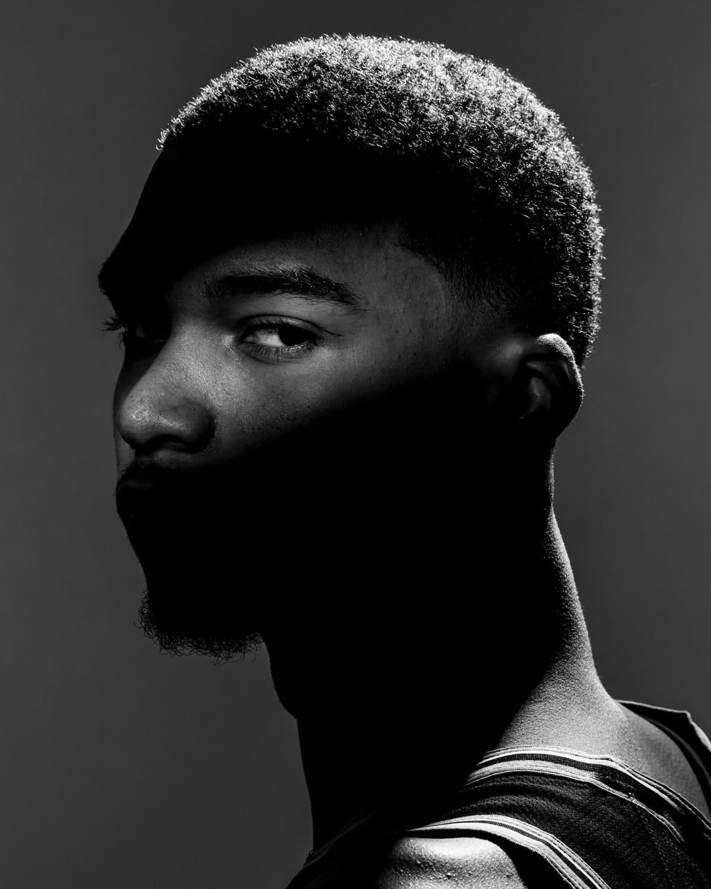
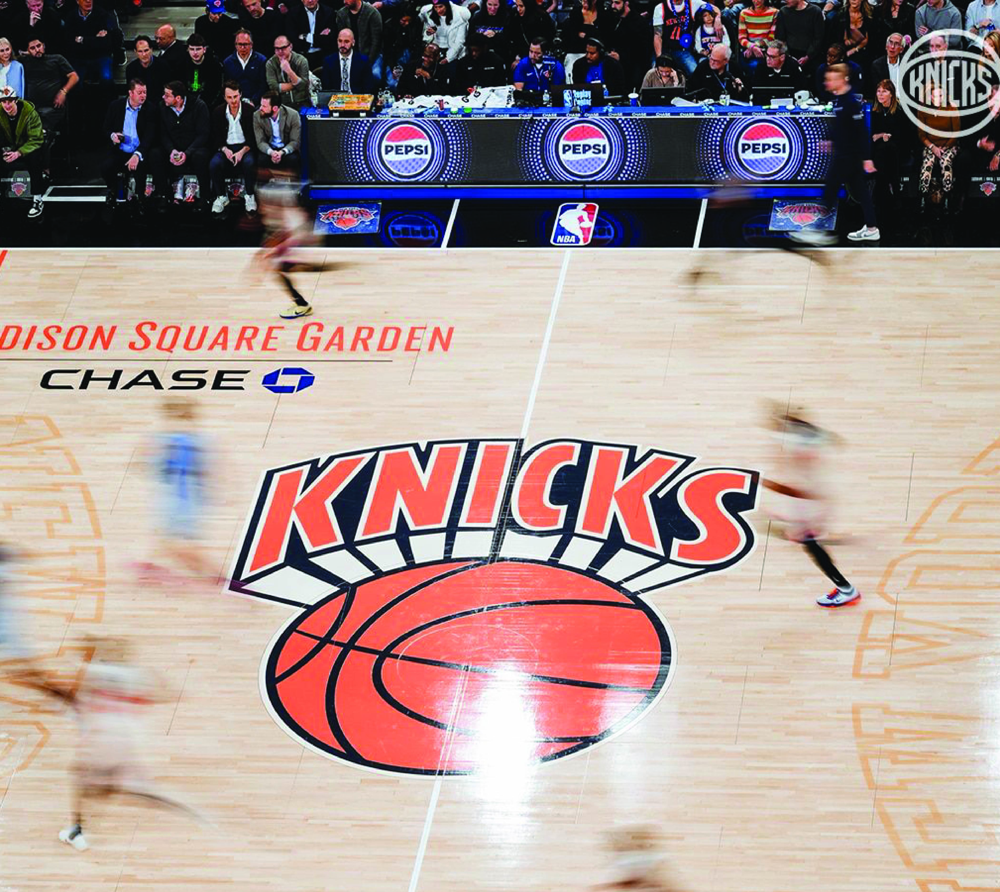
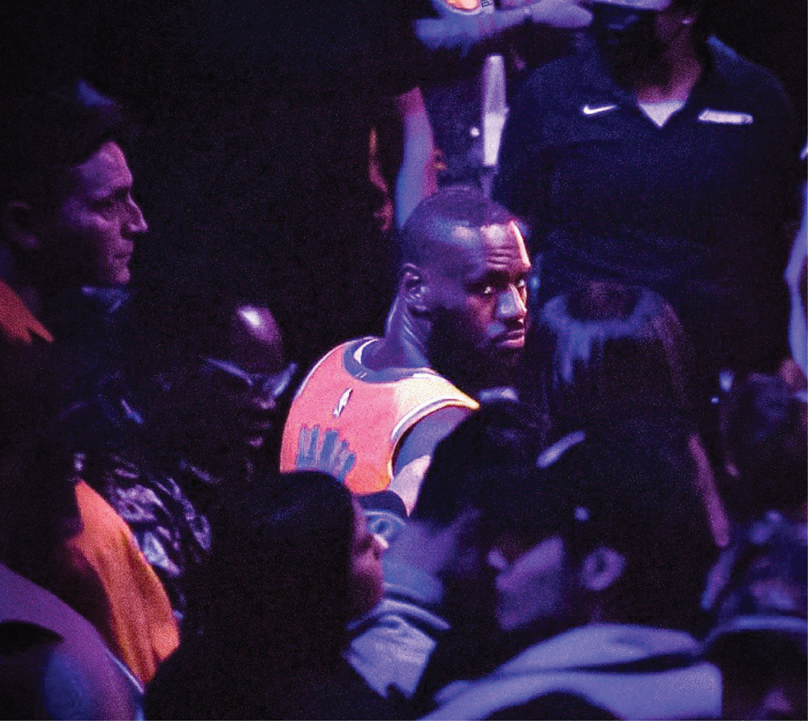
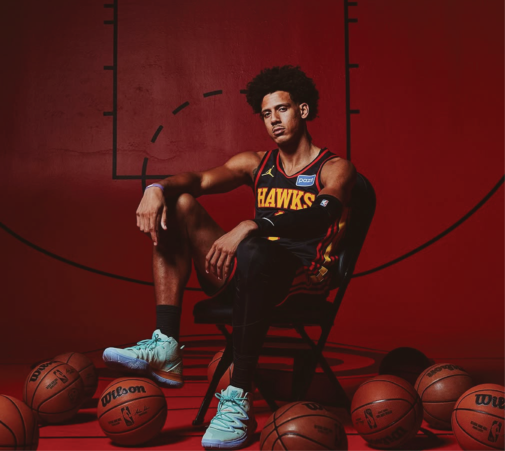
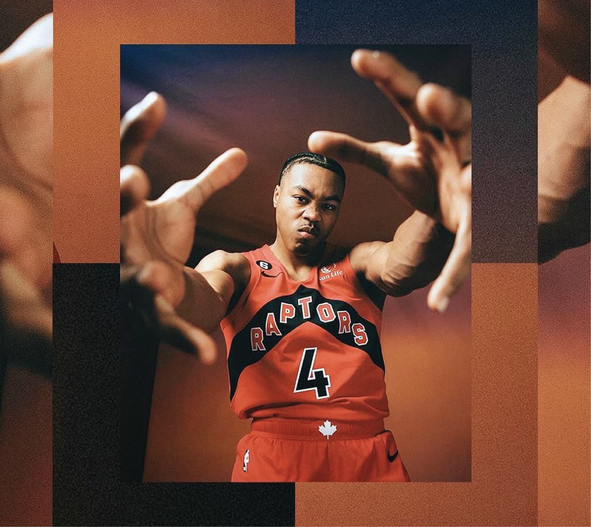

The Frenchman has Arrived
Victor Wembanyama becomes the first ever unanimous Defensive Player of the Year. As he battles the OKC Thunder in the conference finals, can we see the French phenom win his first championship at just 22 years old?

Look at the Lottery: Draft Prospect Gallery
There's a few new kids coming to town. Get to know the 2026 NBA Draft prospects ready to make their debut.

2026 Top 5 Home Court Advantages
From the gardens of Madison Square to TD in Boston, we take a look at the 5 most advantageous arenas to play in, with excerpts from former All-Star Gilbert Arenas.

One last 82
LeBron James has still yet to announce his plans for the upcoming season. Being a free agent, will he spent what could be his last 82 games in Los Angeles? Or does James have a different location in mind, due north?

Ready to fly?
Despite Atlanta's first round exit, young star Jalen Johnson has done nothing but grow and improve over his first 3 seasons. Does the young hawk have what it takes to become the face of the franchise?

4 Takes over the 6
Scottie Barnes was one game away from his first playoff series win, and displayed that he can compete with the best. Outperforming an MVP candidate in Cade Cunningham, where does he rank going into next season?